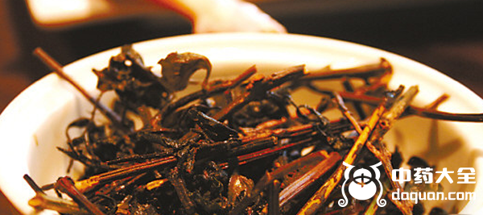
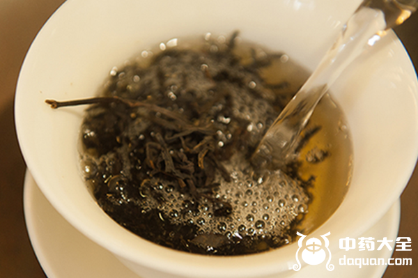

如果你没听说过红丝线，那么提起野灯笼花肯定就明白了，红丝线是比较常见的一种野生植物，并且拥有很高的药用价值，单独红丝线水煎服就能治疗肺结核。红丝线的功效与作用可是有很多的，不仅能治咳嗽咳血还能治疗肺炎、高血压、高血脂非常适合老年人养身。
1、止咯血

在以前肺结咳还没有列入国家报销的时候有很多人是治不起肺结咳的，有很多人肺结咳脱到后面会咳血，后有人发现了这种路边可见的药物有治疗咯血的功效。
2、治肺炎
红丝线性凉，有抗菌消炎的作用，走肺经，可以治疗肺炎疾病。肺炎主要的表现是咳嗽不止、咳痰、痰黄，有时身上伴有发烧症状。
3、治高血压
患有高血压的患者来说，红丝线可是非常好的了，红丝线有着治疗高血压的功效，并且红丝线相比其他药材更常见，相对便宜。
4、治疗糖尿病
红丝线有降血脂的功效，可以调节血糖，能帮助胰岛分泌，能改善糖尿病患者的血糖，对治愈糖尿病是有一定帮助的。
5、治疗高血脂
高血脂是体内血脂较高，高血脂能发展的疾病有很多想动脉粥样硬化，冠心病，脑中风等多种心血疾病，红丝线有降低血脂的作用。
1、保护肝脏

红丝线有降血糖降血脂的功效，有很强的保护肝脏的作用。平时多用红丝线泡茶喝，可以起到调脂保护肝脏的作用，身材较为肥胖的可以使用。
2、增强人体免疫力
红丝线做为一款止咳、祛痰的药材，还能增强免疫力，它止咳的功效的作用就是用来调节免疫做到的，所以红丝线有增强人体免疫力的作用。
结语：通过上文的介绍，相信大家都知道了红丝线的功效与作用，希望朋友们在生活中能够使用适量的红丝线来改善体质预防老年病。